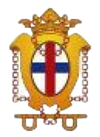

Nuestra Señora de gracia y buen remedio
2018 - 2022El Instituto "Nuestra Señora de Gracia y Buen Remedio" es una escuela católica que tiene como finalidad, la formación integral de los alumnos, de acuerdo con la concepción cristiana del hombre, de la vida y del mundo, y prepararlos para participar en la transformación y mejora de la sociedad.

Argentina Programa #seprogramar
2022Es un programa para acceder a capacitaciones gratuitas en: programación, testing y habilidades digitales.
Argentina Programa #yoprogramo
2022 - 2023Es un programa para acceder a capacitaciones gratuitas en: programación, testing y habilidades digitales.